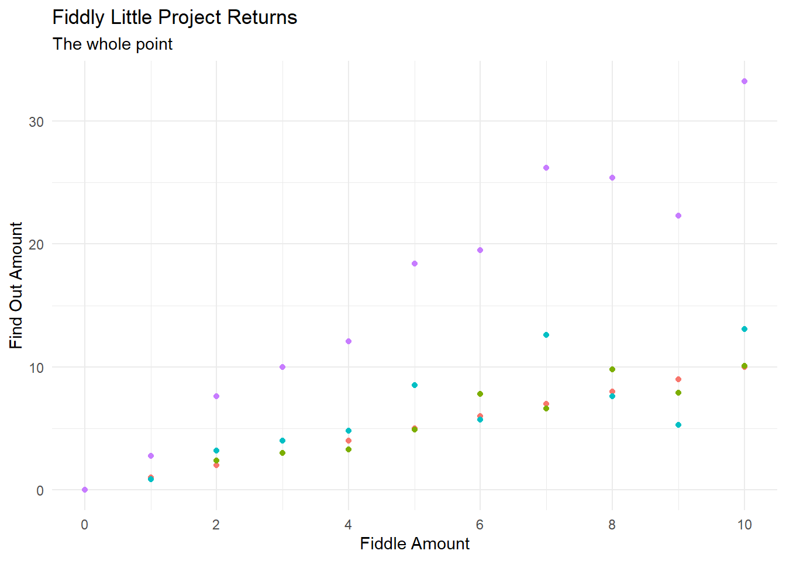

Welcome
While I am not a fan of the words used in a certain meme that sounds a wee bit like “Fiddle around, find out” I am a strong believer that there is nothing more true than learning by doing. I love that the original meme implies that the input to the finding out can be low quality. However, I think the there is room for a second part of the process captured by the phrase “tear down, build up”.
The initial discovery is rewarding, but a further process of tearing it apart and building something from your learning is a powerful act. I believe most of my life I have held back from doing and sharing many such investigations because I did not believe I could contribute anything interesting and that revealing my own ignorance or limits was both shameful and prideful.
Prideful? Because to put my imperfect words to paper (or webpage), I pollute the discourse, and I should know how inadequate I am and not broadcast those ramblings,
I understand now, that it doesn’t matter at all if I contribute anything wider than my own improvement because my improvement is the worthwhile goal. Resolving myself to create something, allows me to bring what is in my mind to the world. With my ideas made manifest in the world, they can be refined or discarded. But thus exposed, I am open to the judgment of others and their criticisms, yet I have had the courage to put words down. Hopefully the sense to release any convictions when finding out better conclusions.
From Hegel,
A will which resolves on nothing is not an actual will; the characterless man can never resolve on anything. The reason for such indecision may also lie in an over-refined sensibility which knows that, in determining something, it enters the realm of finitude, imposing a limit on itself and relinquishing infinity; yet it does not wish to renounce the totality which it intends. Such a disposition is dead, even if its aspiration is to be beautiful. ‘Whoever aspires to great things’, says Goethe, ‘must be able to limit himself.’ Only by making resolutions can the human being enter actuality, however painful the process may be; for inertia would rather not emerge from that inward brooding in which it reserves a universal possibility for itself. But possibility is not yet actuality. The will which is sure of itself does not therefore lose itself in what it determines.
So time to find out.